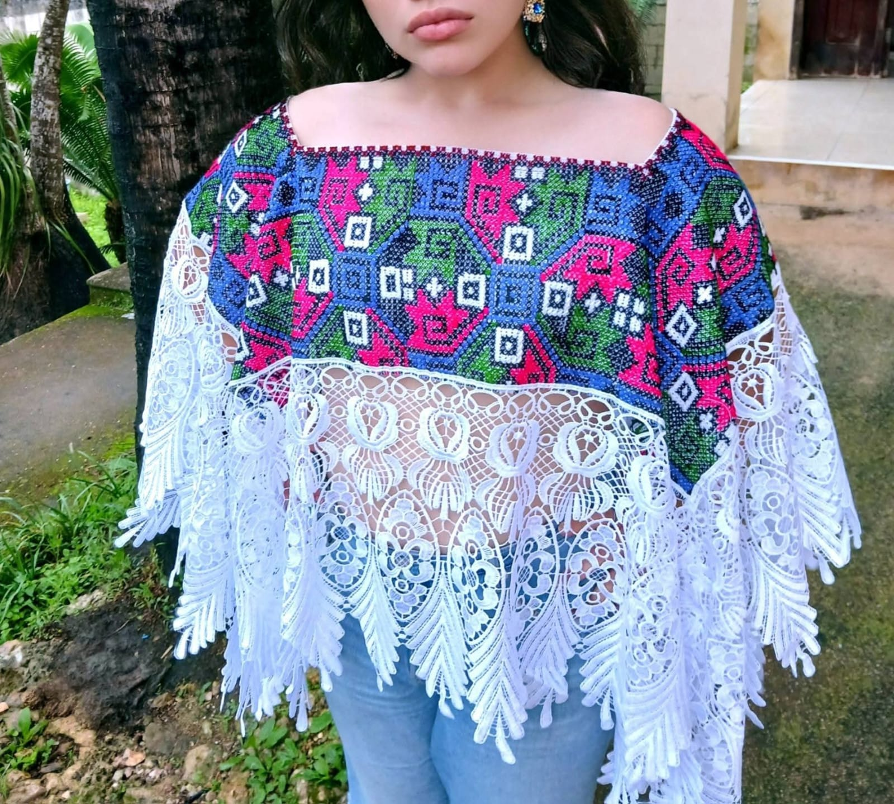
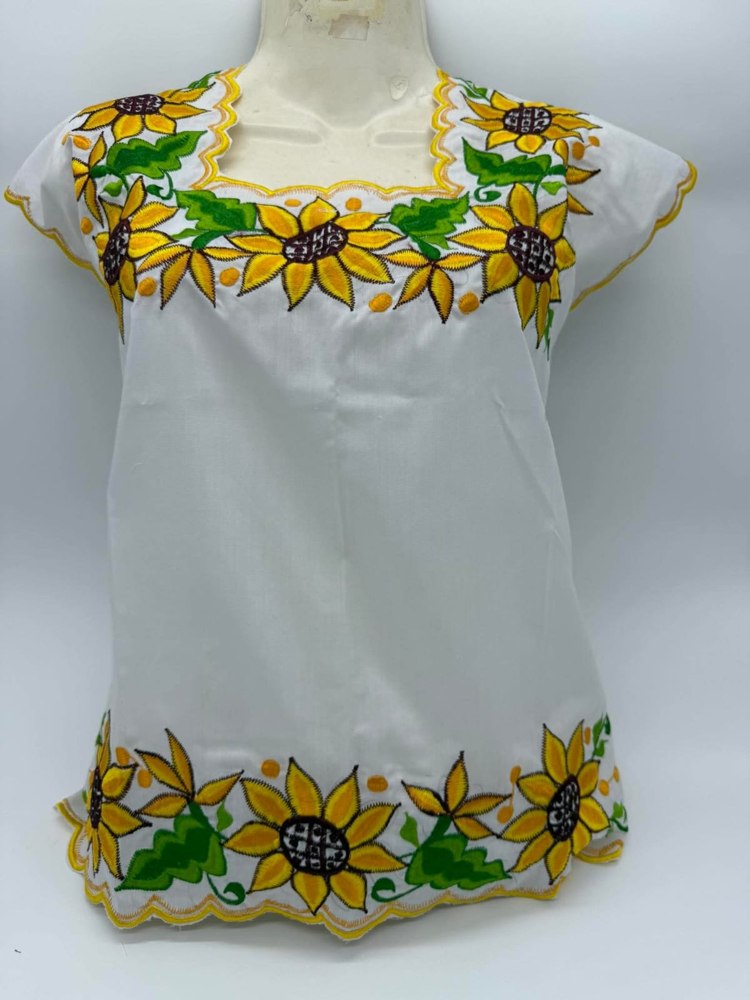
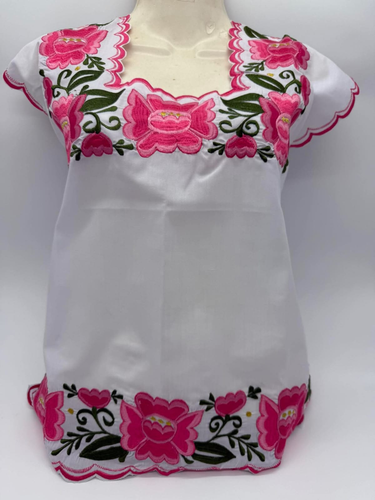
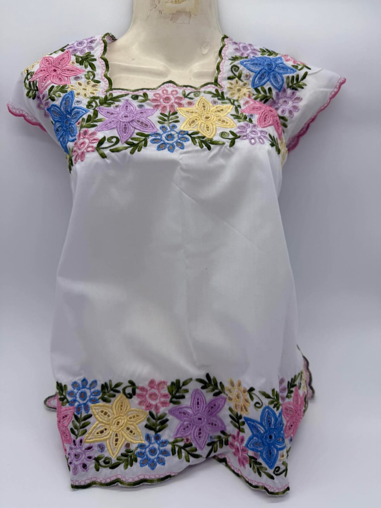

También te puede interesar



Blusa Bordada Floral
⭐⭐⭐⭐⭐
$850 MXN
Blusa artesanal elaborada completamente a mano...
Tallas
Colores disponibles
- Material: Manta 100% algodón
- Técnica: Bordado artesanal a mano
- Tiempo de elaboración: 12 días
- Artesana: Información pendiente